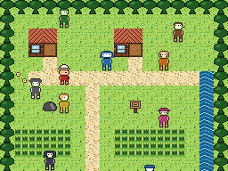
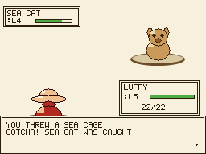
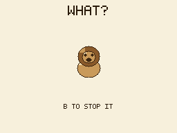

Grand Line
A Game Boy-style RPG where every pixel is drawn by code. A fan game I built with Claude Code: walk a town, catch sea beasts in cages, beat two gyms. No ROM, no emulator, no downloaded assets.

In the browser, nothing to install. Arrows and Z on a keyboard, or the on-screen pad on a phone. It saves in your browser.
- 256×192 screen
- a party of six
- 21 species
- 6 types
- 2 gyms, 2 badges
- 13 maps


Tiles are 16×16 grids written as text, battle sprites are built from shaded shapes, and every object has its own palette of four colours, the way a Game Boy Color does it. The pictures on this page are frames the game drew itself.
An unofficial, non-commercial fan game. One Piece and its characters belong to Eiichiro Oda / Shueisha / Toei Animation; this project is not affiliated with them. Every pixel here is drawn by code.